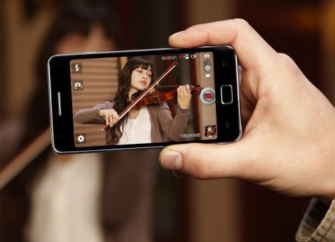
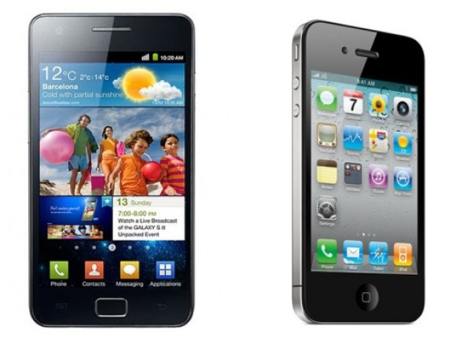

El nuevo buque insignia de Samsung, el Galaxy S II, será el primer smartphone en contar con un puerto MHL. Este estándar fue presentado por primera vez en 2008 y fue promovido por un consorcio que incluye a Nokia, Samsung, Toshiba, Sony y Silicon Image. Se trata, en definitiva, de un nuevo estándar en conectores similar al DisplayPort, miniHDMI o Light Peak.
La gran ventaja del conector MHL que se encuentra en la base del Galaxy S II es que cuenta con un circuito que reconoce tanto los conectores USB como los propios de MHL, y automáticamente cambia el móvil bien en una función USB (carga y datos) o bien en modo MHL (audio, vídeo y carga).

Cuestiones que os podemos adelantar sobre el modelo, obviamente sin confirmar oficialmente: sabemos que cuenta con sistema operativo Honeycomb y la resolución de pantalla es de 1280×800 píxeles, por ahora poca cosa que la diferencie de Motorola Xoom, con la que por cierto guarda un importante parecido.
Este teléfono multimedia de gran calidad incorporará un micro de 1 GHz del fabricante y en otras zonas podría incluir hasta otro como el de Tegra 2, pero esto no alterará el precio ni el producto.
El Samsung Galaxy S II además mejora en panel al anterior con uno de tipo Super AMOLED Plus y una resolución de 854 x 480 px, además de un contraste realmente intensivo, con colores más apreciativos sin lugar a dudas.
Por ahora existe poca información para su salida y estaremos al tanto de su presentación alla por el mes de Abril o Mayo y cuanto costará.
Un cable conversor de microUSB a HDMI te permitirá enviar audio y vídeo a las pantallas que cuenten con un puerto HDMI, aunque por desgracia, el televisor no cargará el Galaxy S II durante el proceso. Los primeros televisores con puerto MHL verán la luz este mismo año y éstos sí cargarán los dispositivos conectados. El Galaxy S II es así, el primer móvil con puerto MHL, pero de cara a este verano se espera que lleguen otra media docena de móviles, un tablet y algunos televisores. Te dejamos con más detalles en un vídeo tras el salto.
Un cable conversor de microUSB a HDMI te permitirá enviar audio y vídeo a las pantallas que cuenten con un puerto HDMI, aunque por desgracia, el televisor no cargará el Galaxy S II durante el proceso. Los primeros televisores con puerto MHL verán la luz este mismo año y éstos sí cargarán los dispositivos conectados. El Galaxy S II es así, el primer móvil con puerto MHL, pero de cara a este verano se espera que lleguen otra media docena de móviles, un tablet y algunos televisores. Te dejamos con más detalles en un vídeo tras el salto.